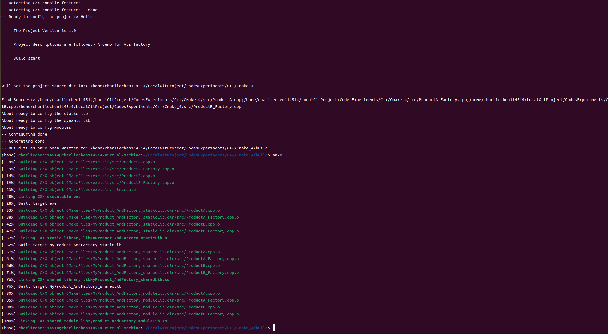
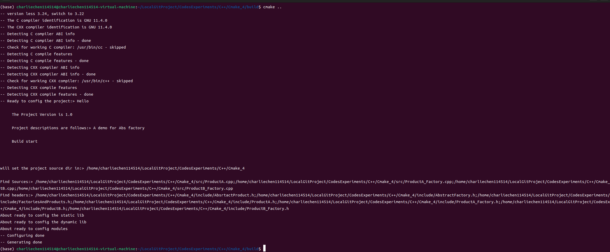
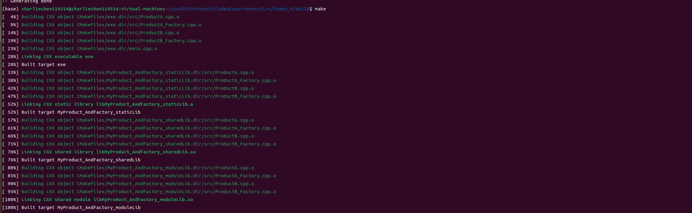
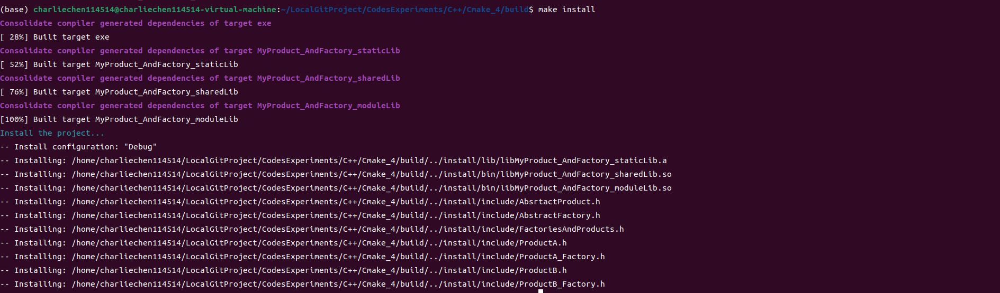

CMake使用小记 2
CMake使用小记2
生成库
现在还是回到我们的构建的工程上来，我们仔细类比一下，会很简单，生成可执行文件是add_executable，那么生成库就是:add_library
add_library(libName _WHAT_TYPE_ src...)
_WHAT_TYPE_上有三种，分别是SHARED（动态库，或者说是共享库）, STATIC（静态库）, MODULE生成的library名会根据STATIC或SHARED成为name.a或name.lib,
这里的STATIC和SHARED可不设置，通过全局的BUILD_SHARED_LIBS的FALSE或TRUE来指定
windows下，如果dll没有export任何信息，则不能使用SHARED，要标识为MODULE
当然，我们填一个坑，就是把所有的头文件都放到一起，这是为了后续生成给他人使用的库时需要的头文件的使用：
mkdir include
mv ./*.h ./include/
# 把main移出来防止后续的教程演示出现重定义main符号的问题
mv ./src/main.cpp ./ 修改一下CMakeLists.txt
if(${CMAKE_VERSION} VERSION_LESS 3.24)
cmake_minimum_required(VERSION ${CMAKE_MAJOR_VERSION}.${CMAKE_MINOR_VERSION})
message(STATUS "version less 3.24, switch to ${CMAKE_MAJOR_VERSION}.${CMAKE_MINOR_VERSION}")
else()
cmake_minimum_required(VERSION 3.24)
message(STATUS "version is good, no need to switch")
endif()
project(Hello
VERSION 1.0
DESCRIPTION "A demo for Abs factory")
SET(CMAKE_BUILD_TYPE "Debug")
message(
STATUS
"Ready to config the project:> ${PROJECT_NAME}\n
The Project Version is ${PROJECT_VERSION}\n
Project descriptions are follows:> ${PROJECT_DESCRIPTION}\n
Build start\n\n\n"
)
message("will set the project source dir in:> ${PROJECT_SOURCE_DIR}\n")
# 改一下include目录
include_directories(${PROJECT_SOURCE_DIR}/include)
file(
GLOB_RECURSE mySource
${PROJECT_SOURCE_DIR}/src/*.cpp
)
message("Find Sources:> ${mySource}")
# main移出来了，加上
add_executable(exe ${mySource} main.cpp)
message("About ready to config the static lib")
add_library(MyProduct_AndFactory_staticLib STATIC ${mySource})
message("About ready to config the dynamic lib")
add_library(MyProduct_AndFactory_sharedLib SHARED ${mySource})
message("About ready to config modules")
add_library(MyProduct_AndFactory_moduleLib MODULE ${mySource})
这就是整个build过程。
include_directories 和 target_include_directories
区别在哪里呢？我们知道这都是包含头文件，如果不添加，那么make的时候就会爆出不认识头文件在何处的错误。这两个的共性都是包含目录，但是前者是全局包含的，就是说所有的目标文件都会包含，target_include_directories则是针对性的去针对每一个target进行设置。语法如下：
target_include_directories(<target> [SYSTEM] [AFTER|BEFORE]
<INTERFACE|PUBLIC|PRIVATE> [items1...]
[<INTERFACE|PUBLIC|PRIVATE> [items2...] ...])PUBLIC 在public后面的库会被Link到你的target中，并且里面的符号也会被导出，提供给第三方使用。
PRIVATE 在private后面的库仅被link到你的target中，并且终结掉，第三方不能感知你调了啥库
INTERFACE 在interface后面引入的库不会被链接到你的target中，只会导出符号。Hopefully the explanation that follows helps clarify what PRIVATE, PUBLIC and INTERFACE mean and do. From my understanding of things, I think there may have been some subtle inaccuracies in some of the discussions so far, so hopefully the following is helpful and if I've got something wrong, then by all means please point out the inaccuracies. - When A links in B as *PRIVATE*, it is saying that A uses B in its implementation, but B is not used in any part of A's public API. Any code that makes calls into A would not need to refer directly to anything from B. An example of this could be a networking library A which can be built to use one of a number of different SSL libraries internally (which B represents). A presents a unified interface for client code which does not reference any of the internal SSL data structures or functions. Client code would have no idea what SSL implementation (B) is being used by A, nor does that client code need to care. - When A links in B as *INTERFACE*, it is saying that A does not use B in its implementation, but B is used in A's public API. Code that calls into A may need to refer to things from B in order to make such calls. One example of this is an interface library which simply forwards calls along to another library but doesn't actually reference the objects on the way through other than by a pointer or reference. Another example is where A is defined in CMake as an interface library, meaning it has no actual implementation itself, it is effectively just a collection of other libraries (I'm probably over-simplifying here, but you get the picture). - When A links in B as *PUBLIC*, it is essentially a combination of PRIVATE and INTERFACE. It says that A uses B in its implementation and B is also used in A's public API. Consider first what this means for include search paths. If something links against A, it will also need any include search paths from B if B is in A's public API. Thus, if A links in B either as PUBLIC or INTERFACE, then any header search paths defined for target B will also apply to anything that links to A. Any PRIVATE header search path for B will NOT be carried through to anything that links only to A. The target_include_directories() command handles this. The situation with compile flags is analogously handled with target_compile_definitions() and target_compile_options(). Now consider the situation for the actual libraries involved. If A is a shared library, then A will have encoded into it a dependency on B. This information can be inspected with tools like ldd on Linux, otool on Mac and something like Dependency Walker (a.k.a. depends.exe) on Windows. If other code links directly to A, then it also will have encoded into it a dependency on A. It will not, however, have a dependency on B unless A links in B as PUBLIC or INTERFACE. So far, so good. If, however, A is a static library, the situation changes. Static libraries do not carry information about other libraries they depend on. For this reason, when A links in B as PRIVATE and another target C links in A, CMake will still add B to the list of libraries to be linked for C because parts of B are needed by A, but A itself doesn't have that dependency encoded into it. So even though B is an internal implementation detail of A, C still needs B added to the linker command, which CMake conveniently handles for you. If you were paying careful attention, you would have noticed that when A links in B as PRIVATE, the include directories of B never propagate to something linking to A, but if A is a static library, then the *linking* of B behaves as though the relationship was PUBLIC. This PRIVATE-becomes-PUBLIC behaviour for static libraries only applies to the *linking*, not to the other dependencies (compiler options/flags and include search paths). The upshot of all this is that if you select PRIVATE, PUBLIC or INTERFACE based on the explanations in the dot points above, then CMake will ensure dependencies propagate through to where they are required, regardless of whether libraries are static or shared. This does, of course, rely on you the developer not missing any dependencies or specifying the wrong PRIVATE/PUBLIC/INTERFACE relationship. As a final note, if you call target_link_libraries() and do not specify any of PRIVATE, PUBLIC or INTERFACE, you may be tempted to believe that it will be treated as PUBLIC. The situation is actually more complicated than that though. It may be treated as PUBLIC or PRIVATE, depending on what other target_link_library() calls and/or target property manipulations have been performed. The documentation for target_link_libraries() talks a bit about this, but you have to go digging into the documentation for the target properties it mentions to get an understanding of what circumstances lead to PRIVATE or PUBLIC behaviour.
target_link_libraries
指定链接给定目标和/或其依赖项时要使用的库或标志。将传播链接库目标的使用要求。目标依赖项的使用要求会影响其自身源的编译。
target_link_libraries(<target> ... <item>... ...)
target_link_libraries(<target>
<PRIVATE|PUBLIC|INTERFACE> <item>...
[<PRIVATE|PUBLIC|INTERFACE> <item>...]...) 其实就是链接库的意思。
install命令
我们编译完库了，想要让用户可以make install实现自动化的安装，可以使用install来配置路径：
install(TARGETS MyLib
EXPORT MyLibTargets
LIBRARY DESTINATION lib # 动态库安装路径
ARCHIVE DESTINATION lib # 静态库安装路径
RUNTIME DESTINATION bin # 可执行文件安装路径
PUBLIC_HEADER DESTINATION include # 头文件安装路径
)LIBRARY, ARCHIVE, RUNTIME, PUBLIC_HEADER是可选的，可以根据需要进行选择。 DESTINATION后面的路径可以自行制定，根目录默认为
CMAKE_INSTALL_PREFIX,可以试用set方法进行指定，如果使用默认值的话，Unix系统的默认值为/usr/local, Windows的默认值为c:/Program Files/${PROJECT_NAME}。比如字linux系统下若LIBRARY的安装路径指定为lib,即为/usr/local/lib。
set(CMAKE_INSTALL_PREFIX path) 的方式指定如何安装，举个例子，我们希望把内容安装在跟源码同级的位置上：
# 注意，这里的../install是因为相对于我们的build目录而言的，如果是希望在build目录下安装install,需要改成./intstall
set(CMAKE_INSTALL_PREFIX "../install") 现在我们这样编写CMakeLists.txt
if(${CMAKE_VERSION} VERSION_LESS 3.24)
cmake_minimum_required(VERSION ${CMAKE_MAJOR_VERSION}.${CMAKE_MINOR_VERSION})
message(STATUS "version less 3.24, switch to ${CMAKE_MAJOR_VERSION}.${CMAKE_MINOR_VERSION}")
else()
cmake_minimum_required(VERSION 3.24)
message(STATUS "version is good, no need to switch")
endif()
project(Hello
VERSION 1.0
DESCRIPTION "A demo for Abs factory")
SET(CMAKE_BUILD_TYPE "Debug")
set(CMAKE_INSTALL_PREFIX "../install")
message(
STATUS
"Ready to config the project:> ${PROJECT_NAME}\n
The Project Version is ${PROJECT_VERSION}\n
Project descriptions are follows:> ${PROJECT_DESCRIPTION}\n
Build start\n\n\n"
)
message("will set the project source dir in:> ${PROJECT_SOURCE_DIR}\n")
include_directories(${PROJECT_SOURCE_DIR}/include)
file(
GLOB_RECURSE mySource
${PROJECT_SOURCE_DIR}/src/*.cpp
)
message("Find Sources:> ${mySource}")
file(
GLOB_RECURSE myHeader
${PROJECT_SOURCE_DIR}/include/*.h
)
message("Find headers:> ${myHeader}")
add_executable(exe ${mySource} main.cpp)
message("About ready to config the static lib")
add_library(MyProduct_AndFactory_staticLib STATIC ${mySource})
message("About ready to config the dynamic lib")
add_library(MyProduct_AndFactory_sharedLib SHARED ${mySource})
message("About ready to config modules")
add_library(MyProduct_AndFactory_moduleLib MODULE ${mySource})
# 注意现在变成相对跟目录在build下讨论
# 安装在../install/lib下
install(TARGETS MyProduct_AndFactory_staticLib DESTINATION lib)
# 安装在../install/bin下
install(TARGETS MyProduct_AndFactory_sharedLib DESTINATION bin)
install(TARGETS MyProduct_AndFactory_moduleLib DESTINATION bin)
# 安装在../install/include下
install(FILES ${myHeader} DESTINATION include)

注意，这个时候还没装好库，需要我们cmake --install，或者是make install

现在我们看看文件结构，多出来了：
..
├── build(这个文件我们略去)
│
├── CMakeLists.txt
├── file_tree.txt
├── include
│ ├── AbsrtactProduct.h
│ ├── AbstractFactory.h
│ ├── FactoriesAndProducts.h
│ ├── ProductA_Factory.h
│ ├── ProductA.h
│ ├── ProductB_Factory.h
│ └── ProductB.h
├── install (*KEY*)
│ ├── bin
│ │ ├── libMyProduct_AndFactory_moduleLib.so
│ │ └── libMyProduct_AndFactory_sharedLib.so
│ ├── include
│ │ ├── AbsrtactProduct.h
│ │ ├── AbstractFactory.h
│ │ ├── FactoriesAndProducts.h
│ │ ├── ProductA_Factory.h
│ │ ├── ProductA.h
│ │ ├── ProductB_Factory.h
│ │ └── ProductB.h
│ └── lib
│ └── libMyProduct_AndFactory_staticLib.a
├── main.cpp
└── src
├── ProductA.cpp
├── ProductA_Factory.cpp
├── ProductB.cpp
└── ProductB_Factory.cpp 大功告成。